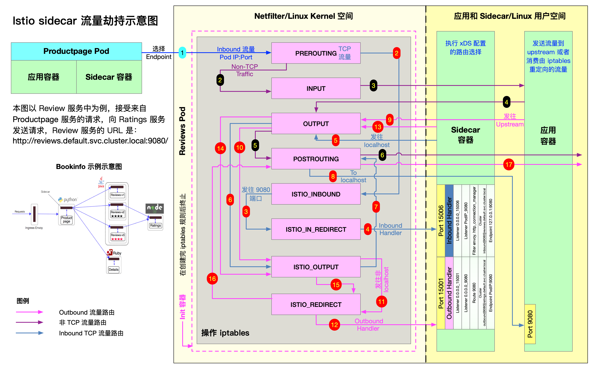

架构
简介
作为新一代 Service Mesh 产品的领航者，Istio 创新性的在原有网格产品的基础上，添加了控制平面这一结构，使其产品形态更加的完善
这也是为什么它被称作第二代 Service Mesh 的原因，在此之后，几乎所有的网格产品都以此为基础进行架构的设计
毫不夸张的说，Istio 作为 Service Mesh 领域的弄潮儿，引领了时代的潮流，这也从一个侧面印证了它一经推出就大红大紫的原因
Istio 的架构组成
Istio 的架构由两部分组成，分别是数据平面（Data Plane）和控制平面（Control Plane）：
- 数据平面：由整个网格内的 sidecar 代理组成
- 这些代理以 sidecar 的形式和应用服务一起部署
- 每一个 sidecar 会接管进入和离开服务的流量，并配合控制平面完成流量控制等方面的功能
- 可以把数据平面看做是网格内 sidecar 代理的网络拓扑集合
- 控制平面：控制和管理数据平面中的 sidecar 代理，完成配置的分发、服务发现、和授权鉴权等功能
- 架构中拥有控制平面的优势在于，可以统一的对数据平面进行管理
试想一下，如果没有它，想对网格内的代理进行配置的更新操作，恐怕就不是一件轻松的事情了。这也正是为什么拥有控制平面的产品，对 Linkerd 这种第一代 Service Mesh 具有巨大竞争优势的原因
在 Istio 1.5 版本中，控制平面由原来分散的、独立部署的几个组件整合为一个单体结构 istiod，变成了一个单进程、多模块的组织形态

核心组件
下面简单的介绍一下 Istio 架构中几个核心组件的主要功能
Envoy
Istio 的数据平面默认使用 Envoy 作为 sidecar 代理 ，在未来也将支持使用 MOSN 作为数据平面。Envoy 将自己定位于高性能的 sidecar 代理，也可以认为它是第一代 Service Mesh 产品。可以说，流量控制相关的绝大部分功能都是由 Envoy 提供的，这主要包括三个部分：
- 路由、流量转移
- 弹性能力：如超时重试、熔断等
- 调试功能：如故障注入、流量镜像
Pilot
Pilot 组件的主要功能是将 路由规则 等配置信息转换为 sidecar 可以识别的信息，并下发给 数据平面 。可以把它简单的理解为是一个 配置分发器 （dispatcher），并辅助 sidecar 完成流量控制相关的功能
Citadel
Citadel 是 Istio 中专门负责 安全 的组件，内置有 身份 和 证书 管理功能，可以实现较为强大的授权和认证等操作
Galley
Galley 是 Istio 1.1 版本中新增加的组件，其目的是将 Pilot 和底层平台（如 Kubernetes）进行解耦。它分担了原本 Pilot 的一部分功能，主要负责配置的验证、提取和处理等功能
设计目标
Istio 一经发布就希望打造一个最终形态的 Service Mesh 产品，功能异常丰富，可以说是胸怀宇宙 在设计理念上，Istio 并未遵从最小可行性产品（MVP）的演进策略，而是较为激进的全盘压上，想借此提供一个完善而强大的产品和架构体系
下面的几点设计目标促成了其架构的形态：
- 对应用透明：从本质上来说，对应用透明是 Service Mesh 的特性，一个合格的 Service Mesh 产品都应该具有这一特性，否则也就失去了网格产品的核心竞争力
通过借助 Kubernetes 的 admission controller ，配合 webhook 可以完成 sidecar 的自动注入
在配置方面，也基本做到了对应用无侵入
- 可扩展性：Istio 认为，运维和开发人员随着深入使用 Istio 提供的功能，会逐渐涌现更多的需求，主要集中在策略方面。因此，为策略系统提供足够的扩展性，成为了 Istio 的一个主要的设计目标
Mixer 组件就是在这一理念下诞生的，它被设计为一个插件模型，开发人员可以通过接入各种适配器（Adapter），来实现多样化的策略需求 毫不夸张的说，Mixer 的这种插件设计为 Istio 提供了无限的扩展性
- 可移植性：考虑到现有云生态的多样性，Istio 被设计为可以支持几种不同的底层平台，也支持本地、虚拟机、云平台等不同的部署环境
不过从目前的情况来看，Istio 和 Kubernetes 还是有着较为紧密的依赖关系
- 策略一致性：Istio 使用自己的 API 将策略系统独立出来，而不是集成到 sidecar 中，这允许服务根据需要直接与之集成。同时，Istio 在配置方面也注重统一和用户体验的一致
一个典型的例子是路由规则都统一由虚拟服务来配置，可在网格内、外以及边界的流量控制中复用
变迁之旅
从 2017 年 5 月发布以来，Istio 经历了四个重要的版本和由此划分的三个发展阶段。在不到三年的产品迭代过程中，出现了两次重大的架构变动。功能的调整无可厚非，但架构的多次重构就较为少见了。来简要分析一下这个变迁历程。
- 0.1 版本：2017 年 5 月发布。作为第二代 Service Mesh 的开创者，宣告了 Istio 的诞生，也燃起了网格市场的硝烟与战火
- 1.0 版本：发布于 2018 年 7 月，对外宣传生产环境可用。从 0.1 到 1.0 版本，开发时间经历了一年多，但持续的发布了多个 0.x 版本，这一阶段处于快速迭代期
- 1.1 版本：发布于 2019 年 3 月，号称企业级可用的版本。一个小的版本号变化居然耗费了半年之久，其主要原因是出现了第一次架构重构，这一阶段算是调整期
1.5 版本：发布于 2020 年 3 月，再次进行架构的重建，将多组件整合为单体形态的 istiod。从 1.1 到 1.5 版本的一年中，Istio 开始遵循季节性发布，进入了产品的稳定发展期

在第一次架构变化中，Istio 团队认为虽然 Mixer 的插件模型为其带来了扩展性方面的优势，但与 Adapter 的相互依赖关系使得它会受到插件变化的影响 1.1 版本彻底贯彻了解耦原则，解决了存在的耦合问题，职责分明，结构清晰，做到了设计上的极致，然而物极必反，高度松散的结构引入了性能方面的问题，同时在易用性上也受人诟病 市场是检验真理的唯一标准，看到 Istio 在市场上的惨淡成绩后，Istio 团队痛定思痛，终于下定决心断臂自救，在 1.5 版本的时候以回归单体的形式进行了架构的重建，完成了一次自我救赎 最新的 1.5 版本结构简洁，降低系统复杂度的同时也提升了易用性。尽管新版本还未受到市场的检验，但 Istio 团队敢于变革的勇气让我们对它的未来又有了新的期待
控制平面
控制平面就是 控制 和 管理 数据平面的 sidecar 代理，完成配置的 分发 、 服务发现 、和 授权鉴权 等功能
从 Istio 1.5 版本开始，控制平面由原来分散的、独立部署的几个组件整合为一个单体结构 istiod，变成了一个单进程、多模块的组织形态
目前的控制平面包括 Pilot、Galley、Citadel，接下来会一一介绍它们
Pilot
在应用从单体架构向微服务架构演进的过程中，微服务之间的服务发现、负载均衡、熔断、限流等服务治理需求是无法回避的问题。
在 Service Mesh 出现之前，通常的做法是将这些基础功能以 SDK 的形式嵌入业务代码中，但是这种强耦合的方案会增加开发的难度，增加维护成本，增加质量风险 1. 比如 SDK 需要新增新特性，业务侧也很难配合 SDK 开发人员进行升级，所以很容易造成 SDK 的版本碎片化问题 2. 如果再存在跨语言应用间的交互，对于多语言 SDK 的支持也非常的低效 相当于相同的代码以不同语言重复实现，实现这类代码既很难给开发人员带来成就感，团队稳定性难以保障 如果实现这类基础框架时涉及到了语言特性，其他语言的开发者也很难直接翻译
而 Service Mesh 的本质则是将此类通用的功能沉淀至 sidecar 中，由 sidecar 接管服务的流量并对其进行治理，可以通过流量劫持的手段，做到代码零侵入性。这样可以让业务开发人员更关心业务功能。而底层功能由于对业务零侵入，也使得基础功能的升级和快速的更新迭代成为可能
Istio 是近年来 Service Mesh 的代表作，而 Istio 流量管理的核心组件就是 Pilot。Pilot 主要功能就是 管理 和 配置 部署在特定 Istio 服务网格中的所有 sidecar 代理 实例。它管理 sidecar 代理之间的 路由流量规则 ，并配置 故障恢复 功能，如超时、重试和熔断
Pilot 架构

抽象模型
为了实现对不同服务注册中心 Kubernetes 、 consul 的支持，Pilot 需要对不同的输入来源的数据有一个统一的存储格式，也就是 抽象模型 抽象模型中定义的关键成员包括：
- HostName: service 名称
- Ports: service 端口
- Address: service ClusterIP
- Resolution: 负载均衡策略
- ……
平台适配器
Pilot 的实现是基于 平台适配器 （Platform adapters） 的，借助平台适配器 Pilot 可以实现 服务注册中心数据 到 抽象模型 之间的 数据转换
例如 Pilot 中的 Kubernetes 适配器通过 Kubernetes API 服务器得到 Kubernetes 中 service 和 pod 的相关信息，然后翻译为抽象模型提供给 Pilot 使用
通过平台适配器模式， Pilot 还可以从 Consul 等平台中获取服务信息，还可以开发适配器将其他提供服务发现的组件集成到 Pilot 中
xDS API
Pilot 使用了一套起源于 Envoy 项目的标准数据面 API 来将服务信息和流量规则下发到数据面的 sidecar 中。这套标准数据面 API，也叫 xDS。Sidecar 通过 xDS API 可以动态获取 Listener （监听器）、 Route （路由）、 Cluster （集群）及 Endpoint （集群成员）配置：
- LDS: Listener 监听器控制 sidecar 启动端口监听（目前只支持 TCP 协议），并配置 L3/L4 层过滤器
- 当网络连接达到后，配置好的网络过滤器堆栈开始处理后续事件
- RDS: 用于 HTTP 连接管理过滤器动态获取路由(Router)配置，路由配置:
- HTTP 头部修改（增加、删除 HTTP 头部键值）
- virtual hosts （虚拟主机）
- virtual hosts 定义的各个路由条目
- CDS: 用于动态获取 Cluster 信息
- EDS: 用于动态维护端点(Endpoint)信息，端点信息中还包括负载均衡权重、金丝雀状态等
- 基于这些信息，sidecar 可以做出智能的负载均衡决策
通过采用该标准 API， Istio 将控制面和数据面进行了解耦，为多种数据平面 sidecar 实现提供了可能性
例如蚂蚁金服开源的 Golang 版本的 Sidecar MOSN (Modular Observable Smart Network)
用户 API
Pilot 还定义了一套用户 API， 用户 API 提供了面向业务的高层抽象，可以被运维人员理解和使用。运维人员使用该 API 定义流量规则并下发到 Pilot ，这些规则被 Pilot 翻译成数据面的配置，再通过标准数据面 API 分发到 sidecar 实例，可以在运行期对微服务的流量进行控制和调整
通过运用不同的流量规则，可以对网格中微服务进行精细化的流量控制，如按版本分流、断路器、故障注入、灰度发布等
Pilot 实现

图中实线连线表示控制流，虚线连线表示数据流，带 [pilot] 的组件表示为 Pilot 组件
关键的组件如下：
- Discovery service：即 pilot-discovery，主要功能
- 从 Service provider（如 kubernetes 或者 consul ）中获取服务信息
- 从 Kubernetes API Server 中获取流量规则（Kubernetes CRD Resource）
- 将服务信息和流量规则转化为数据面可以理解的格式，通过标准的数据面 API 下发到网格中的各个 sidecar 中
- agent：即 pilot-agent 组件，该进程根据 Kubernetes API Server 中的配置信息生成 Envoy 的配置文件，负责启动、监控 sidecar 进程
- proxy：既 sidecar proxy，是所有服务的流量代理，直接连接 pilot-discovery ，间接地从 Kubernetes 等服务注册中心获取集群中微服务的注册情况
- service A/B：使用了 Istio 的应用，如 Service A/B，的进出网络流量会被 proxy 接管
pilot-agent
pilot-agent 负责的主要工作如下：
- 生成 sidecar 的配置
- Sidecar 的启动与监控
- 生成 sidecar 配置
Sidecar 的配置主要在 pilot-agent 的 init 方法与 proxy 命令处理流程的前半部分生成：
- init 方法为 pilot-agent 二进制的命令行配置大量的 flag 与默认值
- proxy 命令处理流程则负责将这些 flag 组装成为 ProxyConfig 对象以启动 Envoy
//go 语言，源码摘自 pilot-agent，role 角色定义 role = &model.Proxy{} ... type Proxy struct { // ClusterID 用于指代 proxy 所在集群名称 ClusterID string // Type 用于标记 proxy 运行模式 Type NodeType IPAddresses []string ID string DNSDomain string ... }
role 默认的对象为 proxy，关键参数如下：
- Type：pilot-agent 的 role 有两种运行模式。根据 role.Type 变量定义，最新版本有2个类型，默认是 sidecar
- sidecar
- router
- IPAddress, ID, DNSDomain：依据注册中心的类型，给予默认值
- 默认处理方式是 Kubernetes，在 Kubernetes 默认值下
- IPAddress 默认为 INSTANCE_IP
- ID 默认为 POD_NAME
- DNSDomain 默认为 default.svc.cluster.local
- 默认处理方式是 Kubernetes，在 Kubernetes 默认值下
Istio 可以对接的第三方注册中心有 Kubernetes、Consul、MCP、Mock
Envoy 配置文件及命令行参数主要有2个：
- 启动目录默认为/usr/local/bin/envoy
- 启动参数相关代码在func (e *envoy) args中
//go 语言，源码摘自 pilot-agent ，envoy 启动参数 startupArgs := []string{"-c", fname, "--restart-epoch", fmt.Sprint(epoch), "--drain-time-s", fmt.Sprint(int(convertDuration(e.Config.DrainDuration) / time.Second)), "--parent-shutdown-time-s", fmt.Sprint(int(convertDuration(e.Config.ParentShutdownDuration) / time.Second)), "--service-cluster", e.Config.ServiceCluster, "--service-node", e.Node, "--max-obj-name-len", fmt.Sprint(e.Config.StatNameLength), "--local-address-ip-version", proxyLocalAddressType, "--log-format", fmt.Sprintf("[Envoy (Epoch %d)] ", epoch) + "[%Y-%m-%d %T.%e][%t][%l][%n] %v", }
Envoy 启动参数关键释义：
- –restart-epoch: epoch 决定了Envoy 热重启的顺序，第一个 Envoy 进程对应的 epoch 为0，后面新建的 Envoy 进程对应 epoch 顺序递增1
- –drain-time-s: 在 pilot-agent init 函数中指定默认值为2秒，可通过 pilot-agent proxy 命令的 drainDuration flag 指定
- –parent-shutdown-time-s: 在 pilot-agent init 函数中指定默认值为3秒，可通过 pilot-agent proxy 命令的 parentShutdownDuration flag 指定
- –service-cluster: 在 pilot-agent init 函数中指定默认值为 istio-proxy ，可通 pilot-agent proxy 命令的 serviceCluster flag 指定
- –service-node: 将 role 的字符串拼接成 node.Type~ip~ID~DNSDomain 格式
- Sidecar 的启动与监控
//go 语言，源码摘自 pilot-agent ，envoy 启动代理及监听器 envoyProxy := envoy.NewProxy(envoy.ProxyConfig{ Config: proxyConfig, //Envoy 的配置，如目录等 Node: role.ServiceNode(), //role 的字符串拼接 node.Type~ip~ID~DNSDomain 格式 NodeIPs: role.IPAddresses, PodName: podName, PodNamespace: podNamespace, PodIP: podIP, ... }) // envoy 的代理 agent := envoy.NewAgent(envoyProxy, features.TerminationDrainDuration()) // envoy 的监控和程序，会监听证书变化和启动 envoy watcher := envoy.NewWatcher(tlsCerts, agent.Restart) go watcher.Run(ctx) // 监听停止信号 go cmd.WaitSignalFunc(cancel) // envoy 主循环，阻塞等待停止信号 return agent.Run(ctx)
- 创建 envoy 对象，结构体包含 proxyConfig, role.serviceNode, loglevel 和 pilotSAN（service account name）等
- 创建 agent 对象，包含前面创建的 envoy 结构体，一个 epochs 的 map，1个 channel：statusCh
- 创建 watcher ，包含证书和 agent.Restart 方法并启动协程执行 watcher.Run
- watcher.Run 首先执行 agent.Restart，启动 Envoy
- 启动协程调用 watchCerts ，用于监控各种证书，如果证书文件发生变化，则重新生成证书签名并重启 Envoy
- 创建 context，启动协程调用 cmd.WaitSignalFunc 以等待进程接收到 SIGINT, SIGTERM 信号，接受到信号之后通过 context 通知 agent，agent 接到通知后调用 terminate 来 kill 所有 Envoy 进程，并退出 agent 进程
- agent.Run 主进程堵塞，监听 statusCh，这里的 status 其实就是 exitStatus，在监听到 exitStatus 后，会删除当前 epochs 中的 channel 资源
pilot-discovery
pilot-discovery 扮演服务注册中心、Istio 控制平面到 sidecar 之间的桥梁作用
pilot-discovery 的主要功能如下：
- 监控服务注册中心（如 Kubernetes）的服务注册情况。在 Kubernetes 环境下，会监控 service、endpoint、pod、node 等资源信息
- 监控 Istio 控制面信息变化，在 Kubernetes 环境下，会监控包括 RouteRule、 VirtualService、Gateway、EgressRule、ServiceEntry 等以 Kubernetes CRD 形式存在的 Istio 控制面配置信息
- 将上述两类信息合并组合为 sidecar 可以理解的（遵循 Envoy data plane api 的）配置信息，并将这些信息以 gRPC 协议提供给 sidecar
- 初始化及启动
//go 语言，源码摘自 pilot-discovery，pilot-discovery 初始化及启动的关键部分，省去异常处理 // 创建 discoveryServer 对象并启动 discoveryServer, err := bootstrap.NewServer(serverArgs) discoveryServer.Start(stop) // discoveryServer 对象的具体创建方法 func NewServer(args *PilotArgs) (*Server, error) { //环境变量 e := &model.Environment{...} s := &Server{ clusterID: getClusterID(args), //集群id environment: e, //环境变量 EnvoyXdsServer: envoyv2.NewDiscoveryServer(e, args.Plugins), //Pilot 针对 Envoy v2 xds APIs 的 gRPC 实现，用于通知 envoy 配置更新 // ... } s.initKubeClient(args) s.initMeshConfiguration(args, fileWatcher) s.initConfigController(args) s.initServiceControllers(args) s.initDiscoveryService(args) // ... } // ... // gRPC服务启动 func (s *Server) Start(stop <-chan struct{}) error { go func() { s.grpcServer.Serve(s.GRPCListener) }() }
pilot-discovery 的初始化主要在 pilot-discovery 的 init 方法和在 discovery 命令处理流程中调用的 bootstrap.NewServer 完成，关键步骤如下：
- 创建 Kubernetes apiserver client（initKubeClient），可以在 pilot-discovery 的 discovery 命令的 kubeconfig flag 中提供文件路径，默认为空
- 读取 mesh 配置（initMeshConfiguration），包含MixerCheckServer、MixerReportServer、ProxyListenPort、RdsRefreshDelay、MixerAddress 等一些列配置，默认 mesh 配置文件"/etc/istio/config/mesh"
- 初始化与配置存储中心的连接（initConfigController 方法）对 Istio 做出的各种配置，比如 route rule、virtualservice 等，需要保存在配置存储中心（config store）内
- 配置与服务注册中心（service registry）的连接（initServiceControllers 方法）
- 初始化 discovery 服务（initDiscoveryService），将 discovery 服务注册为 Config Controller 和 Service Controller 的 Event Handler，监听配置和服务变化消息
- 启动 gRPC Server 并接收来自 Envoy 端的连接请求
- 接收 sidecar 端的 xDS 请求，从 Config Controller、Service Controller 中获取配置和服务信息，生成响应消息发送给 sidecar
- 监听来自 Config Controller 、Service Controller 的变化消息，并将配置、服务变化内容通过 xDS 接口推送到 sidecar
- 配置信息监控与处理
ConfigController 是 Pilot 实现配置信息监控与处理的核心，它关联的几个关键的结构体如下：
//go 语言，源码摘自 pilot-discovery，pilot-discovery 实现配置监听的关键部分 // 用于存储 route rule、virtualservice 等流量配置信息 type ConfigStore interface { Schemas() collection.Schemas Get(typ resource.GroupVersionKind, name, namespace string) *Config List(typ resource.GroupVersionKind, namespace string) ([]Config, error) Create(config Config) (revision string, err error) Update(config Config) (newRevision string, err error) Delete(typ resource.GroupVersionKind, name, namespace string) error Version() string GetResourceAtVersion(version string, key string) (resourceVersion string, err error) GetLedger() ledger.Ledger SetLedger(ledger.Ledger) error } // 扩展了 ConfigStore 存储，并提供资源处理的注册函数，使用此函数注册后，资源变更会回调 handler 处理 type ConfigStoreCache interface { RegisterEventHandler(kind resource.GroupVersionKind, handler func(Config, Config, Event)) Run(stop <-chan struct{}) HasSynced() bool } //controller 实现了 ConfigStore 接口和 ConfigStoreCache 接口 type controller struct { client *Client queue queue.Instance kinds map[resource.GroupVersionKind]*cacheHandler } type Task func() error // controller 的 queue 的类型，包装了 Task 任务 type Instance interface { Push(task Task) Run(<-chan struct{}) } //initServiceControllers 下的 kubernets 下的 Controller ，由 initKubeRegistry 创建 func NewController(client kubernetes.Interface, options Options) *Controller { c := &Controller{ client: client, queue: queue.NewQueue(1 * time.Second), // ... } // ... registerHandlers(c.services, c.queue, "Services", c.onServiceEvent)
ConfigController 用于处理 Istio 流控 CRD, 如 VirtualService、DestinationRule 等
- ConfigStore 对象利用 client-go 库从 Kubernetes 获取 RouteRule、VirtualService 等 CRD 形式存在控制面信息，转换为 model 包下的 Config 对象，对外提供 Get、List、Create、Update、Delete 等 CRUD 服务
- ConfigStoreCache 则主要扩展了：注册 Config 变更事件处理函数 RegisterEventHandler 、开始处理流程的 Run 方法
Pilot 中，目前实现了 ConfigStoreCache 的 controller 主要有以下五种：
- crd/controller/controller.go
- serviceregistry/mcp/controller.go
- kube/gateway/controller.go
- kube/ingress/controller.go
- memory/controller.go
//go 语言，源码摘自 pilot-discovery，pilot-discovery 实现配置监听的关键部分，接上一段代码中的 registerHandlers func registerHandlers(informer cache.SharedIndexInformer, q queue.Instance, otype string, handler func(interface{}, model.Event) error) { informer.AddEventHandler( cache.ResourceEventHandlerFuncs{ AddFunc: func(obj interface{}) { // ... q.Push(...) // ... }, UpdateFunc: func(old, cur interface{}) { // ... q.Push(...) // ... }, DeleteFunc: func(obj interface{}) { // ... q.Push(...) // ... }, }) } //queue 的实现，始终等待执行 task func (q *queueImpl) Run(stop <-chan struct{}) { // ... for { if len(q.tasks) == 0 { return } task, q.tasks = q.tasks[0], q.tasks[1:] task() } }
其中比较关键的是 crd controller。CRD 是 CustomResourceDefinition 的缩写 ，CRD Controller:
- 利用 SharedIndexInformer 实现对 CRD 资源的 list/watch
- 将 Add、Update、Delete 事件涉及到的 CRD 资源对象封装为一个 Task
- push 到 ConfigController 的 queue 里
- queue 队列始终处于监听状态，只要队列中有内容，就会回调 task 函数执行
Citadel
Citadel 是 Istio 中负责 身份认证 和 证书管理 的核心安全组件，1.5 版本之后取消了独立进程，作为一个模块被整合在 istiod 中
Citadel 基本功能
总体来说，Istio 在安全架构方面主要包括以下内容：
- 证书签发机构_（CA）负责 _密钥 和 证书 管理
- API 服务器将 安全配置 分发 给 数据平面
- 客户端、服务端通过代理 安全通信
- Envoy 代理管理 遥测 和 审计
Istio 的 身份标识模型 使用一级服务标识来确定请求的来源，它可以灵活的标识终端用户、工作负载等。在平台层面，Istio 可以使用类似于 服务名称 来标识身份，或直接使用平台提供的服务标识
比如 Kubernetes 的 ServiceAccount，AWS IAM 用户、角色账户等
在身份和证书管理方面，Istio 使用 X.509 证书，并支持密钥和证书的 自动轮换
从 1.1 版本开始，Istio 开始支持 安全发现服务器（SDS） 随着不断的完善和增强，1.5 版本 SDS 已经成为默认开启的组件 Citadel 以前有两个功能：将证书以 Secret 的方式挂载到命名空间里；通过 SDS gRPC 接口与 nodeagent（已废弃）通信 目前 Citadel 只需要完成与 SDS 相关的工作，其他功能被移动到了 istiod 中
Citadel 工作原理
Citadel 主要包括 CA 服务器 、 SDS 服务器 、 证书密钥控制器 等模块，它们的工作原理如下
CA 服务器
Citadel 中的 CA 签发机构是一个 gRPC 服务器 ，启动时会注册两个 gRPC 服务：
- CA 服务，用来处理 CSR 请求 （certificate signing request）
- 证书服务，用来签发证书
CA:
- 通过 HandleCSR 接口处理来自客户端的 CSR 请求
- 对客户端进行身份验证（包括 TLS 认证和 JWT 认证）
- 验证成功后会调用 CreateCertificate 进行证书签发
SDS 服务器
SDS 即安全发现服务（Secret discovery service），它是一种在 运行时 动态获取 证书私钥 的 API ，Envoy 代理通过 SDS 动态获取证书私钥。Istio 中的 SDS 服务器负责 证书管理 ，并实现了 安全配置的自动化 。相比传统的方式，使用 SDS 主要有以下优点：
- 无需挂载 Secret 卷
- 动态更新证书，无需重启
可以监听多个证书密钥对

目前的版本中，SDS 是默认开启的，它的工作流程如下：
- Envoy 通过 SDS API 发送证书和密钥请求
- istio-agent 作为 Envoy 的代理，创建一个私钥和证书签名请求（CSR），并发送给 istiod
- CA 机构验证收到的 CSR 并生成证书
- istio-agent 将私钥和从 istiod 收到的证书通过 SDS API 发送给 Envoy
以上流程周期性执行实现密钥和证书轮换
证书密钥控制器
证书密钥控制器 CaSecretController 监听 istio.io/key-and-cert 类型的 Secret 资源 ，它会周期性的检查证书是否过期，并更新证书
小结
随着 1.5 版本新架构的发布，Citadel 从独立的进程变成了 istiod 中的一个模块，其功能也逐渐被弱化
目前主要和 istiod、istio-agent 协同工作，负责证书和密钥管理
数据平面
数据平面（data plane）是最先出现在分层网络中的概念，网络层一般被分为控制平面（control plane）与数据平面：
- 控制平面主要为数据包的快速转发准备必要信息，如：路由协议，设备管理，命令行，ARP，IGMP 等
- 数据平面则主要负责高速地 处理 和 转发 数据包，因为所有由网络处理器处理的数据包都必须经过这里，所以是影响整个系统性能的关键因素
这样划分的目的是把不同类型的工作分离开，避免不同类型的处理相互干扰
数据平面的转发工作无疑是网络层的重要工作，需要最高的优先级
而控制平面的路由协议等不需要在短时间内处理大量的包，可以将其放到次一级的优先级中
数据平面可以专注使用定制序列化等各种技术来提高传输速率，而控制平面则可以借助于通用库来达到更好的控制与保护效果
服务网格（Service Mesh）是一个用于处理服务间通信的基础设施层，它负责为构建复杂的云原生应用传递可靠的网络请求。在实践中，服务网格通常实现为一组和应用程序部署在一起的轻量级的网络代理，但对应用程序来说是透明的。这看起来和分层网络中的网络层极为相似，因此作为 Service Mesh 的典型实现，Istio 采用同样的设计，如下图，将系统分为数据平面与控制平面。类似的，数据平面由 通信代理 组件（Envoy/Linkerd等）和组件之间的网络通信组成；控制平面负责对通信代理组件进行管理和配置

Istio 数据平面核心是以 边车 （sidecar）模式运行的智能代理：
- 边车模式将数据平面核心组件 部署 到单独的 流程 或 容器 中，以提供 隔离 和 封装
- 边车应用与父应用程序 共享 相同的 生命周期 ，与父应用程序一起创建和退出
边车应用附加到父应用程序，并为应用程序提供额外的特性支持
数据平面的边车代理可以调节和控制微服务之间所有的网络通信，每个服务 Pod 启动时会伴随启动 istio-init 和 proxy 容器：
- istio-init 容器：主要功能是 初始化 Pod 网络 和对 Pod 设置 iptable 规则 ，设置完成后 自动结束
- Proxy 容器会启动两个服务：
- istio-agent 的作用是同步管理数据，启动并管理网络代理服务进程，上报遥测数据
- 网络代理组件则根据管理策略完成流量管控、生成遥测数据
数据平面真正触及到对网络数据包的相关操作，是上层控制平面策略的具体执行者
在 Istio 中，数据平面主要负责执行如下任务：
- 服务发现：探测所有可用的上游或后端服务实例
- 健康检测：探测上游或后端服务实例是否健康，是否准备好接收网络流量
- 流量路由：将网络请求路由到正确的上游或后端服务
- 负载均衡：在对上游或后端服务进行请求时，选择合适的服务实例接收请求，同时负责处理超时、断路、重试等情况
- 身份验证和授权：在 istio-agent 与 istiod 配合下，对网络请求进行身份验证、权限验证，以决定是否响应以及如何响应，使用 mTLS 或其他机制对链路进行加密等
- 链路追踪：对于每个请求，生成详细的统计信息、日志记录和分布式追踪数据，以便操作人员能够理解调用路径并在出现问题时进行调试
简单来说，数据平面的工作就是负责有条件地转换、转发以及观察进出服务实例的每个网络包
现在常见的数据平面实现有：
- Envoy：Istio 默认使用的数据平面实现方案，使用C++开发，性能较高
- MOSN：阿里巴巴公司开源，设计类似 Envoy，使用 Go 语言开发，优化过多协议支持
- Linkerd：一个提供弹性云端原生应用服务网格的开源项目，也是面向微服务的开源 RPC 代理，使用 Scala 开发。它的核心是一个透明代理。因此也可作为典型的数据平面的实现
Sidecar 注入及透明流量劫持
本节将为大家介绍以下内容：
- 什么是 sidecar 模式和它的优势在哪里
- Istio 中是如何做 sidecar 注入的？
- Sidecar proxy 是如何做透明流量劫持的？
SideCar 模式
将 应用程序的功能 划分 为 单独的进程 运行 在 同一个最小调度单元 中（例如 Kubernetes 中的 Pod）可以被视为 sidecar 模式。如下图所示，sidecar 模式允许您在应用程序旁边添加更多功能，而无需额外第三方组件配置或修改应用程序代码：
就像连接了 Sidecar 的三轮摩托车一样，在软件架构中， Sidecar 连接到父应用并且为其添加扩展或者增强功能 Sidecar 应用与主应用程序松散耦合，它可以屏蔽不同编程语言的差异，统一实现微服务的可观察性、监控、日志记录、配置、断路器等功能
使用 Sidecar 模式的优势
使用 sidecar 模式部署服务网格时，无需在节点上运行代理，但是集群中将运行多个相同的 sidecar 副本。在 sidecar 部署方式中，每个应用的容器旁都会部署一个伴生容器（如 Envoy 或 MOSN），这个容器称之为 sidecar 容器。Sidecar 接管进出应用容器的所有流量
在 Kubernetes 的 Pod 中，在原有的应用容器旁边注入一个 Sidecar 容器，两个容器共享存储、网络等资源
可以广义的将这个包含了 sidecar 容器的 Pod 理解为一台主机，两个容器共享主机资源
因其独特的部署结构，使得 sidecar 模式具有以下优势：
- 将与应用业务逻辑无关的功能抽象到共同基础设施，降低了微服务代码的复杂度
- 因为不再需要编写相同的第三方组件配置文件和代码，所以能够降低微服务架构中的代码重复度
- Sidecar 可独立升级，降低应用程序代码和底层平台的耦合度
Istio 中的 sidecar 注入
Istio 中提供了以下两种 sidecar 注入方式：
- 使用 istioctl 手动注入
- 基于 Kubernetes 的 可变 webhook 入驻控制器（mutating webhook addmission controller) 的自动 sidecar 注入方式
不论是手动注入还是自动注入，sidecar 的注入过程都需要遵循如下步骤：
- Kubernetes 需要了解待注入的 sidecar 所连接的 Istio 集群及其配置
- Kubernetes 需要了解待注入的 sidecar 容器本身的配置，如镜像地址、启动参数等
- Kubernetes 根据 sidecar 注入模板和以上配置填充 sidecar 的配置参数，将以上配置注入到应用容器的一侧
使用下面的命令可以手动注入 sidecar :
istioctl kube-inject -f ${YAML_FILE} | kuebectl apply -f -
该命令会使用 Istio 内置的 sidecar 配置来注入
注入完成后您将看到 Istio 为原有 pod template 注入了 initContainer 及 sidecar proxy 相关的配置
Init 容器
Init 容器是一种专用容器，它在应用程序容器启动之前运行，用来包含一些应用镜像中不存在的实用工具或安装脚本。
一个 Pod 中可以指定多个 Init 容器，如果指定了多个，那么 Init 容器将会按顺序依次运行
只有当前面的 Init 容器必须运行成功后，才可以运行下一个 Init 容器
当所有的 Init 容器运行完成后，Kubernetes 才初始化 Pod 和运行应用容器
在 Pod 启动过程中，Init 容器会按顺序在 网络 和 数据卷 初始化之后启动。每个容器必须在下一个容器启动之前成功退出。如果由于运行时或失败退出，将导致容器启动失败，它会根据 Pod 的 restartPolicy 指定的策略进行重试
- 如果 Pod 的 restartPolicy 设置为 Always，Init 容器失败时会使用 RestartPolicy 策略
在所有的 Init 容器没有成功之前，Pod 将不会变成 Ready 状态，Init 容器的端口将不会在 Service 中进行聚集 正在初始化中的 Pod 处于 Pending 状态，但应该会将 Initializing 状态设置为 true Init 容器运行完成以后就会自动终止
Init 容器使用 Linux Namespace ，所以相对应用程序容器来说具有不同的文件系统视图。因此，它们能够具有 访问 Secret 的权限 ，而应用程序容器则不能
Sidecar 注入示例分析
以 Istio 官方提供的 bookinfo 中 productpage 的 YAML 为例，
- Sidecar 容器的注入
- iptables 规则的创建
- 路由的详细过程
apiVersion: apps/v1 kind: Deployment metadata: name: productpage-v1 labels: app: productpage version: v1 spec: replicas: 1 selector: matchLabels: app: productpage version: v1 template: metadata: labels: app: productpage version: v1 spec: serviceAccountName: bookinfo-productpage containers: - name: productpage image: docker.io/istio/examples-bookinfo-productpage-v1:1.15.0 imagePullPolicy: IfNotPresent ports: - containerPort: 9080 volumeMounts: - name: tmp mountPath: /tmp volumes: - name: tmp emptyDir: {}
查看下 productpage 容器的 Dockerfile：
FROM python:3.7.4-slim
COPY requirements.txt ./
RUN pip install --no-cache-dir -r requirements.txt
COPY test-requirements.txt ./
RUN pip install --no-cache-dir -r test-requirements.txt
COPY productpage.py /opt/microservices/
COPY tests/unit/* /opt/microservices/
COPY templates /opt/microservices/templates
COPY static /opt/microservices/static
COPY requirements.txt /opt/microservices/
ARG flood_factor
ENV FLOOD_FACTOR ${flood_factor:-0}
EXPOSE 9080
WORKDIR /opt/microservices
RUN python -m unittest discover
USER 1
CMD ["python", "productpage.py", "9080"]
看到 Dockerfile 中没有配置 ENTRYPOINT，所以 CMD 的配置 python productpage.py 9080 将作为默认的 ENTRYPOINT，记住这一点
再看下注入 sidecar 之后的配置：
containers: - image: docker.io/istio/examples-bookinfo-productpage-v1:1.15.0 # 应用镜像 name: productpage ports: - containerPort: 9080 - args: - proxy - sidecar - --domain - $(POD_NAMESPACE).svc.cluster.local - --configPath - /etc/istio/proxy - --binaryPath - /usr/local/bin/envoy - --serviceCluster - productpage.$(POD_NAMESPACE) - --drainDuration - 45s - --parentShutdownDuration - 1m0s - --discoveryAddress - istiod.istio-system.svc:15012 - --zipkinAddress - zipkin.istio-system:9411 - --proxyLogLevel=warning - --proxyComponentLogLevel=misc:error - --connectTimeout - 10s - --proxyAdminPort - "15000" - --concurrency - "2" - --controlPlaneAuthPolicy - NONE - --dnsRefreshRate - 300s - --statusPort - "15020" - --trust-domain=cluster.local - --controlPlaneBootstrap=false image: docker.io/istio/proxyv2:1.5.1 # sidecar proxy name: istio-proxy ports: - containerPort: 15090 name: http-envoy-prom protocol: TCP initContainers: - command: - istio-iptables - -p - "15001" - -z - "15006" - -u - "1337" - -m - REDIRECT - -i - '*' - -x - "" - -b - '*' - -d - 15090,15020 image: docker.io/istio/proxyv2:1.5.1 # init 容器 name: istio-init
Istio 给应用 Pod 注入的配置主要包括：
- Init 容器 istio-init：用于 pod 中设置 iptables 端口转发
- Sidecar 容器 istio-proxy：运行 sidecar 代理，如 Envoy 或 MOSN
Init 容器解析
Istio 在 pod 中注入的 Init 容器名为 istio-init，在上面 Istio 注入完成后的 YAML 文件中看到了该容器的启动命令是：
istio-iptables -p 15001 -z 15006 -u 1337 -m REDIRECT -i '*' -x "" -b '*' -d 15090,15020
istio-init 容器的入口是 /usr/local/bin/istio-iptables 命令行，该命令行工具的代码的位置在 Istio 源码仓库的 tools/istio-iptables 目录。
注意：在 Istio 1.1 版本时还是使用 isito-iptables.sh 命令行来操作 IPtables
- Init 容器启动入口
Init 容器的启动入口是 istio-iptables 命令行，该命令行工具的用法如下：
$ istio-iptables [flags] -p: 指定重定向所有 TCP 流量的 sidecar 端口（默认为 $ENVOY_PORT = 15001） -m: 指定入站连接重定向到 sidecar 的模式，“REDIRECT” 或 “TPROXY”（默认为 $ISTIO_INBOUND_INTERCEPTION_MODE) -b: 逗号分隔的入站端口列表，其流量将重定向到 Envoy（可选）。使用通配符 “*” 表示重定向所有端口。为空时表示禁用所有入站重定向（默认为 $ISTIO_INBOUND_PORTS） -d: 指定要从重定向到 sidecar 中排除的入站端口列表（可选），以逗号格式分隔。使用通配符“*” 表示重定向所有入站流量（默认为 $ISTIO_LOCAL_EXCLUDE_PORTS） -o：逗号分隔的出站端口列表，不包括重定向到 Envoy 的端口。 -i: 指定重定向到 sidecar 的 IP 地址范围（可选），以逗号分隔的 CIDR 格式列表。使用通配符 “*” 表示重定向所有出站流量 空列表将禁用所有出站重定向（默认为 $ISTIO_SERVICE_CIDR） -x: 指定将从重定向中排除的 IP 地址范围，以逗号分隔的 CIDR 格式列表。使用通配符 “*” 表示重定向所有出站流量（默认为 $ISTIO_SERVICE_EXCLUDE_CIDR） -k：逗号分隔的虚拟接口列表，其入站流量（来自虚拟机的）将被视为出站流量 -g：指定不应用重定向的用户的 GID (默认值与 -u param 相同) -u：指定不应用重定向的用户的 UID 通常情况下，这是代理容器的 UID（默认值是 1337，即 istio-proxy 的 UID） -z: 所有进入 pod/VM 的 TCP 流量应被重定向到的端口（默认 $INBOUND_CAPTURE_PORT = 15006）
该容器存在的意义就是让 sidecar 代理可以拦截所有的进出 pod 的流量，15090 端口（Mixer 使用）和 15092 端口（Ingress Gateway）除外的所有入站（inbound）流量重定向到 15006 端口（sidecar），再拦截应用容器的出站（outbound）流量经过 sidecar 处理（通过 15001 端口监听）后再出站：
- 将应用容器的所有流量都转发到 sidecar 的 15006 端口
- 使用 istio-proxy 用户身份运行， UID 为 1337，即 sidecar 所处的用户空间，这也是 istio-proxy 容器默认使用的用户
- 使用默认的 REDIRECT 模式来重定向流量
- 将所有出站流量都重定向到 sidecar 代理（通过 15001 端口）
- iptables 注入解析
为了查看 iptables 配置，需要登陆到 sidecar 容器中使用 root 用户来查看
因为 kubectl 无法使用特权模式来远程操作 docker 容器，所以需要登陆到 productpage pod 所在的主机上使用 docker 命令登陆容器中查看 如果使用 minikube 部署的 Kubernetes，可以直接登录到 minikube 的虚拟机中并切换为 root 用户。查看 iptables 配置，列出 NAT（网络地址转换）表的所有规则 在 Init 容器启动的时候选择给 istio-iptables 传递的参数中指定将入站流量重定向到 sidecar 的模式为 REDIRECT，因此在 iptables 中将只有 NAT 表的规格配置 如果选择 TPROXY 还会有 mangle 表配置
仅查看与 productpage 有关的 iptables 规则如下：
# 进入 minikube 并切换为 root 用户，minikube 默认用户为 docker $ minikube ssh $ sudo -i # 查看 productpage pod 的 istio-proxy 容器中的进程 $ docker top `docker ps|grep "istio-proxy_productpage"|cut -d " " -f1` UID PID PPID C STIME TTY TIME CMD 1337 10576 10517 0 08:09 ? 00:00:07 /usr/local/bin/pilot-agent proxy sidecar --domain default.svc.cluster.local --configPath /etc/istio/proxy --binaryPath /usr/local/bin/envoy --serviceCluster productpage.default --drainDuration 45s --parentShutdownDuration 1m0s --discoveryAddress istiod.istio-system.svc:15012 --zipkinAddress zipkin.istio-system:9411 --proxyLogLevel=warning --proxyComponentLogLevel=misc:error --connectTimeout 10s --proxyAdminPort 15000 --concurrency 2 --controlPlaneAuthPolicy NONE --dnsRefreshRate 300s --statusPort 15020 --trust-domain=cluster.local --controlPlaneBootstrap=false 1337 10660 10576 0 08:09 ? 00:00:33 /usr/local/bin/envoy -c /etc/istio/proxy/envoy-rev0.json --restart-epoch 0 --drain-time-s 45 --parent-shutdown-time-s 60 --service-cluster productpage.default --service-node sidecar~172.17.0.16~productpage-v1-7f44c4d57c-ksf9b.default~default.svc.cluster.local --max-obj-name-len 189 --local-address-ip-version v4 --log-format [Envoy (Epoch 0)] [%Y-%m-%d %T.%e][%t][%l][%n] %v -l warning --component-log-level misc:error --concurrency 2 # 进入 nsenter 进入 sidecar 容器的命名空间（以上任何一个都可以） $ nsenter -n --target 10660
在该进程的命名空间下查看其 iptables 规则链：
# 查看 NAT 表中规则配置的详细信息。 $ iptables -t nat -L -v # PREROUTING 链：用于目标地址转换（DNAT），将所有入站 TCP 流量跳转到 ISTIO_INBOUND 链上。 Chain PREROUTING (policy ACCEPT 2701 packets, 162K bytes) pkts bytes target prot opt in out source destination 2701 162K ISTIO_INBOUND tcp -- any any anywhere anywhere # INPUT 链：处理输入数据包，非 TCP 流量将继续 OUTPUT 链。 Chain INPUT (policy ACCEPT 2701 packets, 162K bytes) pkts bytes target prot opt in out source destination # OUTPUT 链：将所有出站数据包跳转到 ISTIO_OUTPUT 链上。 Chain OUTPUT (policy ACCEPT 79 packets, 6761 bytes) pkts bytes target prot opt in out source destination 15 900 ISTIO_OUTPUT tcp -- any any anywhere anywhere # POSTROUTING 链：所有数据包流出网卡时都要先进入POSTROUTING 链，内核根据数据包目的地判断是否需要转发出去，我们看到此处未做任何处理。 Chain POSTROUTING (policy ACCEPT 79 packets, 6761 bytes) pkts bytes target prot opt in out source destination # ISTIO_INBOUND 链：将所有入站流量重定向到 ISTIO_IN_REDIRECT 链上，目的地为 15090（mixer 使用）和 15020（Ingress gateway 使用，用于 Pilot 健康检查）端口的流量除外，发送到以上两个端口的流量将返回 iptables 规则链的调用点，即 PREROUTING 链的后继 POSTROUTING。 Chain ISTIO_INBOUND (1 references) pkts bytes target prot opt in out source destination 0 0 RETURN tcp -- any any anywhere anywhere tcp dpt:ssh 2 120 RETURN tcp -- any any anywhere anywhere tcp dpt:15090 2699 162K RETURN tcp -- any any anywhere anywhere tcp dpt:15020 0 0 ISTIO_IN_REDIRECT tcp -- any any anywhere anywhere # ISTIO_IN_REDIRECT 链：将所有的入站流量跳转到本地的 15006 端口，至此成功的拦截了流量到 sidecar 中。 Chain ISTIO_IN_REDIRECT (3 references) pkts bytes target prot opt in out source destination 0 0 REDIRECT tcp -- any any anywhere anywhere redir ports 15006 # ISTIO_OUTPUT 链：选择需要重定向到 Envoy（即本地） 的出站流量，所有非 localhost 的流量全部转发到 ISTIO_REDIRECT。为了避免流量在该 Pod 中无限循环，所有到 istio-proxy 用户空间的流量都返回到它的调用点中的下一条规则，本例中即 OUTPUT 链，因为跳出 ISTIO_OUTPUT 规则之后就进入下一条链 POSTROUTING。如果目的地非 localhost 就跳转到 ISTIO_REDIRECT；如果流量是来自 istio-proxy 用户空间的，那么就跳出该链，返回它的调用链继续执行下一条规则（OUTPUT 的下一条规则，无需对流量进行处理）；所有的非 istio-proxy 用户空间的目的地是 localhost 的流量就跳转到 ISTIO_REDIRECT。 Chain ISTIO_OUTPUT (1 references) pkts bytes target prot opt in out source destination 0 0 RETURN all -- any lo 127.0.0.6 anywhere 0 0 ISTIO_IN_REDIRECT all -- any lo anywhere !localhost owner UID match 1337 0 0 RETURN all -- any lo anywhere anywhere ! owner UID match 1337 15 900 RETURN all -- any any anywhere anywhere owner UID match 1337 0 0 ISTIO_IN_REDIRECT all -- any lo anywhere !localhost owner GID match 1337 0 0 RETURN all -- any lo anywhere anywhere ! owner GID match 1337 0 0 RETURN all -- any any anywhere anywhere owner GID match 1337 0 0 RETURN all -- any any anywhere localhost 0 0 ISTIO_REDIRECT all -- any any anywhere anywhere # ISTIO_REDIRECT 链：将所有流量重定向到 Sidecar（即本地） 的 15001 端口。 Chain ISTIO_REDIRECT (1 references) pkts bytes target prot opt in out source destination 0 0 REDIRECT tcp -- any any anywhere anywhere redir ports 15001
下图展示的是 productpage 服务请求访问 http://reviews.default.svc.cluster.local:9080 当流量进入 reviews 服务内部时，reviews 服务内部的 sidecar proxy 是如何做流量拦截和路由转发的：

第一步开始时，productpage Pod 中的 sidecar 已经通过 EDS 选择出了要请求的 reviews 服务的一个 Pod，知晓了其 IP 地址，发送 TCP 连接请求。
reviews 服务有三个版本，每个版本有一个实例，三个版本中的 sidecar 工作步骤类似